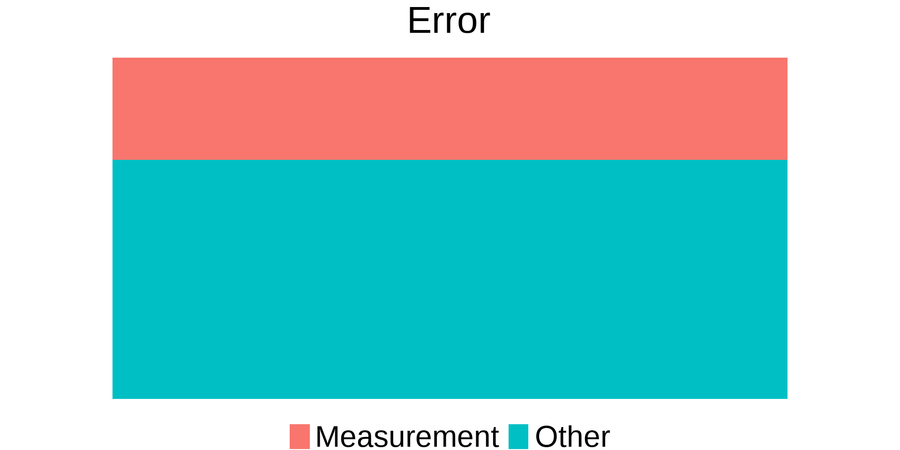
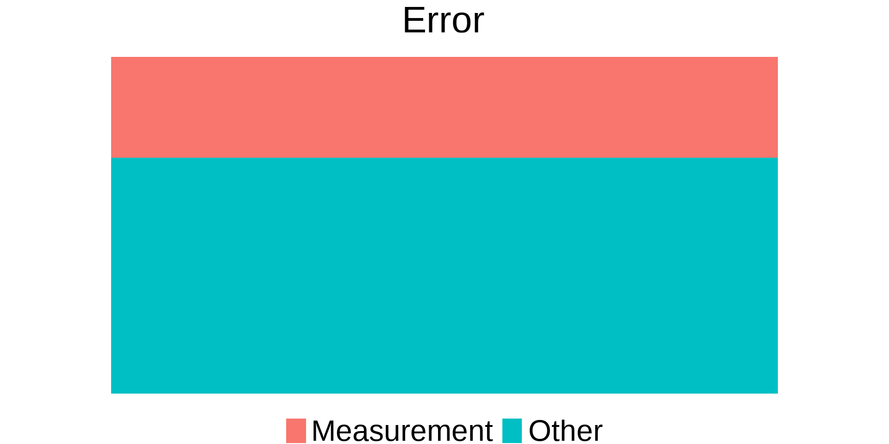

Maine Coon
:strip_icc()/GettyImages-1189893683-e0ff70596b3b4f0687ba573e5a671f74.jpg)
Analysis of Evolutionary Biological Data
Motivation


We are interested in seeing if wearing a flea collar will affect a cat’s weight over time.
\[ Y = \boldsymbol X^\mathrm T\boldsymbol \beta + \varepsilon \]
\(Y\): Outcome of Interest
\(\boldsymbol X = (1, t, X_1, X_2, X_3)^\mathrm T\): Predictor Variables
\(\boldsymbol \beta=(\beta_0, \beta_1, \beta_2, \beta_3, \beta_4)^\mathrm T\): Regression Coefficients
\(\varepsilon \sim N(0, \sigma^2)\)
Fit with Linear Regression
Residuals follow a normal distribution
There is a linear trend
Constant Variance
Observations are Independent
Residuals follow a normal distribution ✅
There is a linear trend ✅
Constant Variance ✅
Observations are Independent ❌
Cannot Construct Likelihood Function
Biased Standard Errors
Uncontrollable Variation



Models

\[ Y_{k} = \boldsymbol X_{k}^\mathrm T\boldsymbol \beta + \varepsilon_{k} \]
\(k = 1, \ldots, N\)
\(N\): Number of all observations
\(Y_{k}\): Outcome of Interest
\(\boldsymbol X_{k} = (1, t_{k}, X_{k1}, X_{k2}, X_{k3})^\mathrm T\): Predictor Variables
\(\boldsymbol \beta=(\beta_0, \beta_1, \beta_2, \beta_3, \beta_4)^\mathrm T\): Regression Coefficients
\(\varepsilon_{k}\sim N(0, \sigma^2)\): Error Term
\[ Y = \boldsymbol X^\mathrm T\boldsymbol \beta + b_i + b_j + b_k +\varepsilon \]
Random Effects (RE) induce the correlation in the model
Different RE can be used based on the grouping mechanism
We assume RE groups are independent of each other
\[ Y_{ij} = \boldsymbol X_{ij}^\mathrm T\boldsymbol \beta + \varepsilon_{ij} \]
\(Y_{ij}=Y_i(t_{ij})\): Outcome of Interest
\(\boldsymbol X_{ij} = (1, t_{ij}, X_{ij1}, X_{ij2}, X_{ij3})^\mathrm T\): Predictor Variables
\(\boldsymbol \beta=(\beta_0, \beta_1, \beta_2, \beta_3, \beta_4)^\mathrm T\): Regression Coefficients
\(\varepsilon_{ij}\sim N(0, \sigma^2)\): Error Term
\[ \boldsymbol b_i = (b_{i0}, b_{i1})^\mathrm T \sim N_2(\boldsymbol 0, \boldsymbol \Sigma_b) \]
\[ \boldsymbol 0 = \left(\begin{array}{c} 0 \\ 0 \end{array} \right) \]
\[ \boldsymbol \Sigma_b = \left(\begin{array}{cc} \sigma_{b0}^2 & \sigma_{b01} \\ \sigma_{b01} & \sigma_{b1}^2 \end{array} \right) \]
\[ Y_{ij} = \boldsymbol X_{ij}^\mathrm T\boldsymbol \beta + b_{i0} + t_{ij} b_{i1} + \varepsilon_{ij} \]
\(Y_{ij}=Y_i(t_{ij})\): Outcome of Interest
\(\boldsymbol X_{ij} = (1, t_{ij}, X_{ij1}, X_{ij2}, X_{ij3})^\mathrm T\): Predictor Variables
\(\boldsymbol \beta=(\beta_0, \beta_1, \beta_2, \beta_3, \beta_4)^\mathrm T\): Regression Coefficients
\(\varepsilon_{ij}\sim N(0, \sigma^2)\): Error Term
\[ \boldsymbol b_{env} = (b_{in}, b_{bw}, b_{out})^\mathrm T \sim N_3(\boldsymbol 0, \sigma^2_b\boldsymbol I_3) \]
\[ \boldsymbol 0 = \left(\begin{array}{c} 0 \\ 0 \\ 0 \end{array} \right) \]
\[ \boldsymbol \Sigma_b = \left(\begin{array}{cc} 1 & 0 & 0 \\ 0 & 1 & 0 \\ 0 & 0 & 1 \end{array} \right) \]
\[ Y_{ij} = \boldsymbol X_{ij}^\mathrm T\boldsymbol \beta + b_{i0} + t_{ij} b_{i1} + b_{env(i)} + \varepsilon_{ij} \]
\(Y_{ij}=Y_i(t_{ij})\)
\(\boldsymbol X_{ij} = (1, t_{ij}, X_{ij1}, X_{ij2}, X_{ij3})^\mathrm T\)
\(\boldsymbol \beta=(\beta_0, \beta_1, \beta_2, \beta_3, \beta_4)^\mathrm T\)
\(\varepsilon_{ij}\sim N(0, \sigma^2)\)
\[ \boldsymbol b_evo = (b_{cat}, b_{sil}, b_{mar})^\mathrm T \sim N_3(\boldsymbol 0, \boldsymbol \Sigma_{evo}) \]
\[ \boldsymbol 0 = \left(\begin{array}{c} 0 \\ 0 \\ 0 \end{array} \right) \]
\[ \boldsymbol \Sigma_b = \left(\begin{array}{cc} \sigma_{c}^2 & \sigma_{cs} & \sigma_{cm}\\ \sigma_{sc} & \sigma_{s}^2 & \sigma_{sm} \\ \sigma_{mc} & \sigma_{ms} & \sigma_{m}^2 \\ \end{array} \right) \]
\[ Y_{ij} = \boldsymbol X_{ij}^\mathrm T\boldsymbol \beta + b_{i0} + t_{ij} b_{i1} + b_{env(i)} + b_{evo(i)} + \varepsilon_{ij} \]
\(Y_{ij}=Y_i(t_{ij})\)
\(\boldsymbol X_{ij} = (1, t_{ij}, X_{ij1}, X_{ij2}, X_{ij3})^\mathrm T\)
\(\boldsymbol \beta=(\beta_0, \beta_1, \beta_2, \beta_3, \beta_4)^\mathrm T\)
\(\varepsilon_{ij}\sim N(0, \sigma^2)\)
We Must Use Random Effects
We Must Use a Bayesian Approach

\[ \widehat{\mathrm{cov}}( \boldsymbol Y_i) = \boldsymbol \Sigma_i = \sigma^2 \boldsymbol \Lambda_i \]
\[ \boldsymbol \Lambda_i = \left(\begin{array}{cccc} 1 & \rho^{(t_{i1}-t_{i2})^2} & \rho^{(t_{i1}-t_{i3})^2} & \rho^{(t_{i1}-t_{i4})^2}\\ \rho^{(t_{i2}-t_{i1})^2} & 1 & \rho^{(t_{i2}-t_{i3})^2} & \rho^{(t_{i2}-t_{i4})^2}\\ \rho^{(t_{i3}-t_{i1})^2} & \rho^{(t_{i3}-t_{i2})^2} & 1 & \rho^{(t_{i3}-t_{i4})^2}\\ \rho^{(t_{i4}-t_{i1})^2} & \rho^{(t_{i4}-t_{i2})^2} & \rho^{(t_{i4}-t_{i3})^2} & 1\\ \end{array} \right) \]
\[ \boldsymbol \Lambda_i = \left(\begin{array}{cccc} 1 & \rho^{|t_{i1}-t_{i2}|} & \rho^{|t_{i1}-t_{i3}|} & \rho^{|t_{i1}-t_{i4}|}\\ \rho^{|t_{i2}-t_{i1}|} & 1 & \rho^{|t_{i2}-t_{i3}|} & \rho^{|t_{i2}-t_{i4}|}\\ \rho^{|t_{i3}-t_{i1}|} & \rho^{|t_{i3}-t_{i2}|} & 1 & \rho^{|t_{i3}-t_{i4}|}\\ \rho^{|t_{i4}-t_{i1}|} & \rho^{|t_{i4}-t_{i2}|} & \rho^{|t_{i4}-t_{i3}|} & 1\\ \end{array} \right) \]
\[ \rho \in (-1, 1) \]
\[ \boldsymbol Y_i \sim N_4(\boldsymbol \mu_i, \boldsymbol \Sigma) \]
\[ \mu_{ij} = \boldsymbol X_{ij}^\mathrm T\boldsymbol \beta + b_{i0} + b_{env(i)} + b_{evo(i)} + \varepsilon_{ij} \]
Bayesian Models

\[ L(\boldsymbol \theta) \propto \prod_{i}f(\boldsymbol y_i|b_i,b_{evo(i)},b_{env(i)};\boldsymbol \theta)f(b_i;\boldsymbol \theta)f(\boldsymbol b_{evo};\boldsymbol \theta) f(\boldsymbol b_{env};\boldsymbol \theta) \]
\(\boldsymbol \theta:\) all parameters involved in the model
\(\sigma^2\sim Gamma(\alpha_1, \beta_1)\)
\(\sigma^2_{env}\sim Gamma(\alpha_2, \beta_2)\)
\(\boldsymbol \beta \sim N_p(\boldsymbol 0, 10\boldsymbol I)\)
\(\rho \sim Unif(-1,1)\)
\(\Sigma_{evo}:\) Obtained from evolutionary biology databases OR Wishart Distribution
\(f(\boldsymbol \theta) = f(\sigma^2)f(\sigma_{env}^2)f(\rho)f(\boldsymbol \beta)\)
\[ L(\boldsymbol \theta) \times f(\boldsymbol \theta) \]
\[ f(\boldsymbol \theta|\boldsymbol Y) \propto L(\boldsymbol\theta)f(\boldsymbol \theta) \]
Estimating the parameter require us to obtain the joint posterior distribution.
This is challenging since we do not know the normalizing constant
Markov Chain Monte Carlo Methods

A Markov chain is a collection states of a certain phenomenom
The changing of the state is only dependent on the current state, not the previous states
A Markov kernel provides the probability of going to another state, given the current state
Also known a transition matrix
Irreducibility: The kernel allows for free movement of all the state space
Recurrent: The chain will return to any nonnegligible set an infinite number of times
Aperiodic: The chain can return to any state immediately
\(X^{(t)}\rightarrow X\)
\(X \sim f\)
\(\frac{1}{T}\sum_{t=1}^{T} h\{X^{(t)}\} \rightarrow E_f\{h(X)\}\)
\(h\): any integrable function
by Law of Large Numbers
MCMC Methods are used to a distribution function that is not easily obtained.
A Markov chain is contructed by simulating Monte Carlo Samples and accepted based on a certain criteria
Based on the MCMC Central Limit Theorem, the Markov chain will construct a limiting distribution that is desired.
The MH algorithm will generate target the distribution function \(f\) a random variable
The MH will generate a candidate from an easier distribution function \(g\) for a Markov chain and accept it based on the Metropolis-Hastings Kernel
With a large enough simulation, the resulting chain will have a limiting distribution of \(f\)
Given \(x^{(t)}\) and targeting \(f(x)\)
\[ q(x,y) = \min\left\{\frac{f(y)g(x|y)}{f(x)g(y|x)},1\right\} \]
A Gibbs sampler is an extension of many univariate MCMC techniques to multivariate analysis
The goal of the sampler is to generate a Markov chain that targets a joint distribution function
The Gibbs Sampler achieves this by sampling from the conditional densities of the joint distribution function
Given \(x^{(t)}\), \(y^{(t)}\), and \(z^{(t)}\), we are targeting \(f(x,y,z)\)
Hamiltonian Monte Carlo is a relatively new MCMC technique used to construct the target distribution
It utilizes Hamiltonian dynamics to simulate the next random variable
The random variable is the accepted based the MH probability
Using Hamiltonian dyanmics improves the mixing properties of the chain and draws are more targeted to the desired distribution
Simulation Study

300 Cats
5 Environments
3 Species
4 Repeated Measurements
6000 Data Points
\(b_i \sim N( 0, 0.8)\)
\(\boldsymbol b_{env} \sim N_5(\boldsymbol 0, 1.5 \boldsymbol I_5)\)
\(\boldsymbol b_{evo} \sim N_3(\boldsymbol 0, \boldsymbol \Sigma_{evo})\)
\[ \boldsymbol \Sigma_{evo} = \left( \begin{array}{ccc} 1 & 0.8 & 0.1\\ 0.8 & 1.3 & 0.43 \\ 0.1 & 0.43 & 1.9 \end{array} \right) \]
\[ \boldsymbol Y_i \sim N_4(\boldsymbol \mu_i, 1.5 \boldsymbol \Lambda_i) \]
\[ \boldsymbol \mu_i = b_{evo(i)} + b_{env(i)} + b_{i} + 3 + 1.1 \boldsymbol t + 2.1 X_{i1} - 1.7 X_{i2} \]
\[ \rho = 0.2,\ X_{i1} \sim Bin(1, 0.5),\ X_{i2} \sim Bin(1, 0.5),\ \boldsymbol t \sim U_4(0,1) \]
\[ \boldsymbol \Lambda_i = \left(\begin{array}{cccc} 1 & \rho^{|t_{i1}-t_{i2}|} & \rho^{|t_{i1}-t_{i3}|} & \rho^{|t_{i1}-t_{i4}|}\\ \rho^{|t_{i2}-t_{i1}|} & 1 & \rho^{|t_{i2}-t_{i3}|} & \rho^{|t_{i2}-t_{i4}|}\\ \rho^{|t_{i3}-t_{i1}|} & \rho^{|t_{i3}-t_{i2}|} & 1 & \rho^{|t_{i3}-t_{i4}|}\\ \rho^{|t_{i4}-t_{i1}|} & \rho^{|t_{i4}-t_{i2}|} & \rho^{|t_{i4}-t_{i3}|} & 1\\ \end{array} \right) \]
R is commonly used statistical programming language
It has capabilities of simulating several probability models
Certain R packages extends its capabilities to implement Bayesian models and MCMC techniques
The brms, rstan, and cmdstanr are packages that allow to implement Bayesian models in Stan
Stan is newest MCMC program
It utilizes the Hamiltonian Monte Carlo approach
It uses BUGS programming
The model is compiled and becomes executable in R or python
data {
int N;
int D;
int S;
int H;
vector[N] X1;
vector[N] X2;
matrix[S,S] evo;
array[N] int<lower=1, upper=N> evo_id;
array[N] int<lower=1, upper=N> env_id;
array[N] vector[D] time;
array[N] matrix[D, D] time_diff;
array[N] vector[D] Y;
}
transformed data {
vector[S] zero;
vector[D] ones;
zero = rep_vector(0, S);
ones = rep_vector(1, D);
}
parameters {
real<lower=0> sig_b;
real<lower=0> sig_h;
real<lower=0> sig_e;
real<lower=-1, upper=1> rho;
real b0;
real b1;
real b2;
real b3;
vector[S] evo_re;
vector[N] bb_re;
vector[H] hh_re;
}
transformed parameters {
array[N] matrix[D,D] cov_1;
array[N] matrix[D,D] cov;
array[N] vector[D] yhat;
for (n in 1:N){
yhat[n] = b0 * ones +
b1 * time[n] +
b2 * X1[n] * ones +
b3 * X2[n] * ones +
bb_re[n] * ones +
evo_re[evo_id[n]] * ones +
hh_re[env_id[n]] * ones;
cov_1[n] = pow(rho, time_diff[n]);
cov[n] = sig_e * cov_1[n];
}
}
model {
for (n in 1:N) {
Y[n] ~ multi_normal(yhat[n], cov[n]);
}
bb_re ~ normal(0, sig_b);
hh_re ~ normal(0, sig_h);
b0 ~ normal(0, 5);
b1 ~ normal(0, 5);
b2 ~ normal(0, 5);
evo_re ~ multi_normal(zero, evo);
sig_b ~ gamma(3, 2);
sig_e ~ gamma(1, 1);
sig_h ~ gamma(3, 2);
rho ~ uniform(-1, 1);
}# Loading R Packages
library(mvtnorm)
library(tidyverse)
library(lme4)
library(cmdstanr)
library(bayesplot)
## Compiling Stan Model to make executable
model <- cmdstan_model(stan_file='~/Dropbox/Machine/new.stan')
# Creating function
kubrick <- function(k=NULL){
# Creating covariance matrix
x1 <- c(1.00, 0.80, 0.10)
x2 <- c(0.80, 1.30, 0.43)
x3 <- c(0.10, 0.43, 1.90)
cov_x <- as.matrix(rbind(x1, x2, x3))
# Simulating species RE
species_re <- rmvnorm(1, sigma = cov_x)
# Simulating env RE
env_re <- rnorm(5, sd = sqrt(1.5))
# Setting Parameters
sig <- 1.5
rho <- 0.2
b0 <- 3
b1 <- 1.1
b2 <- 2.1
b3 <- -1.7
# Constructing Fake Data Set
iv <- 1
df <- data.frame()
for (i in 1:3){
for (ii in 1:5){
for (iii in 1:20){
bb <- rnorm(1, sd = sqrt(0.8))
time_shift <- rmvnorm(1, rep(0, 3), diag(rep(0.00001,3)))
time <- seq(0, 1, length.out = 4) + c(0, time_shift)
sigs <- (rho**as.matrix(dist(time, diag = T, upper = T)))*sig
x1 <- rbinom(1, 1, 0.5)
x2 <- rbinom(1, 1, 0.5)
mu <- species_re[i] + env_re[ii] + b0 + b1 * time + b2 * x1 + b3 * x2 + bb
y <- rmvnorm(1, mu, sigs)
df <- rbind.data.frame(df,
data.frame(t(rbind(y=y,
x1=x1,
x2=x2,
time=time,
bb=bb,
mu = mu,
time_id = 1:4,
i = i,
ii = ii,
iii = iii,
id = iv))))
iv <- iv + 1
}
}
}
#df |> head()
#df |> dim()
#df |> select(id) |> table()
# Data Editing and extracting variables for stan
times <- df |>
pivot_wider(id_cols = id, names_from = time_id, values_from = time) |>
select(-id) |>
as.matrix()
Y <- df |>
pivot_wider(id_cols = id, names_from = time_id, values_from = V1) |>
select(-id) |>
as.matrix()
time_diff <- array(dim = c(300, 4, 4))
for (i in 1:300){
time_diff[i,,] <- times[i,] |> dist(diag = T, upper = T) |> as.matrix()
}
evo_id <- df |> pivot_wider(id_cols = id, names_from = time_id, values_from = i) |>
select(`1`) |> as.vector() |> unlist() |> as.numeric()
env_id <- df |> pivot_wider(id_cols = id, names_from = time_id, values_from = ii) |>
select(`1`) |> as.vector() |> unlist() |> as.numeric()
X1 <- df |> pivot_wider(id_cols = id, names_from = time_id, values_from = x1) |>
select(`1`) |> as.vector() |> unlist() |> as.numeric()
X2 <- df |> pivot_wider(id_cols = id, names_from = time_id, values_from = x2) |>
select(`1`) |> as.vector() |> unlist() |> as.numeric()
# Contruct Data list for stan
data <- list(
N = 300,
D = 4,
S = 3,
H = 5,
X1 = X1,
X2 = X2,
evo = cov_x,
evo_id = evo_id,
env_id = env_id,
time = times,
time_diff = time_diff,
Y = Y
)
# Fit Model with MCMC
fit <- model$sample(data=data,
iter_warmup = 10000,
iter_sampling = 15000,
thin = 5,
adapt_delta = 0.9)
results <- fit$summary()
# Return data set and MCMC
return(list(data = data, fit = fit))
}
## Execute Function in Parallel
kubrick()
## Save the results
save(res, "~/Dropbox/Machine/res/save.RData")